Lesson 53–54 · 天气观察站
无英语配音，42张词卡、完整8轮课文、69题、五个答题区和五颗星。语法依据同步导学的 like 用法，先看短示范，再独立运用。
下面是实际页面截图。小禾为独立测试账号；不代表线上学生成绩。验收范围与边界。
人物、场景与长句
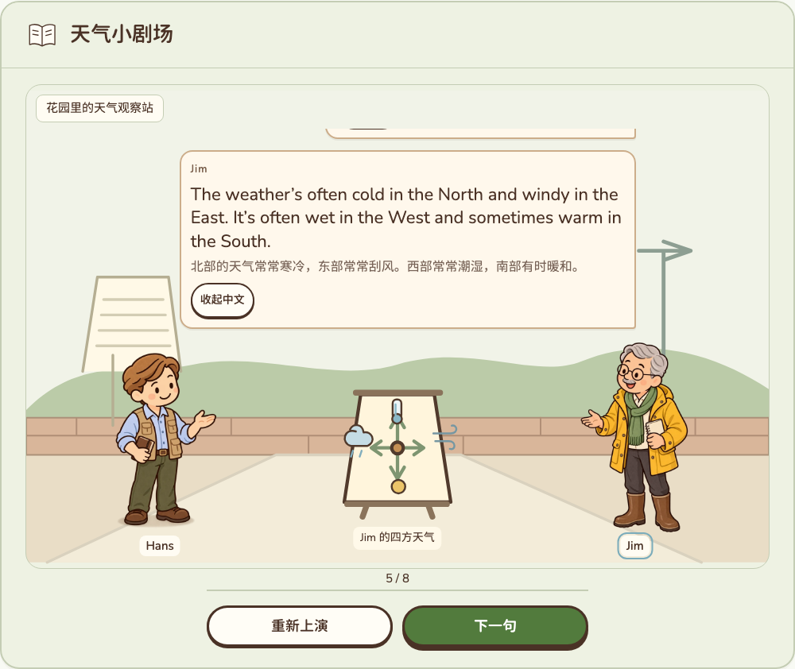
人物相向且完整；对白和天气板都在场景内。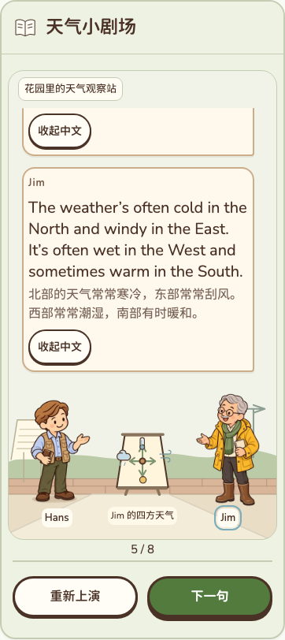
手机：历史对白内部滚动，人物和操作区稳定。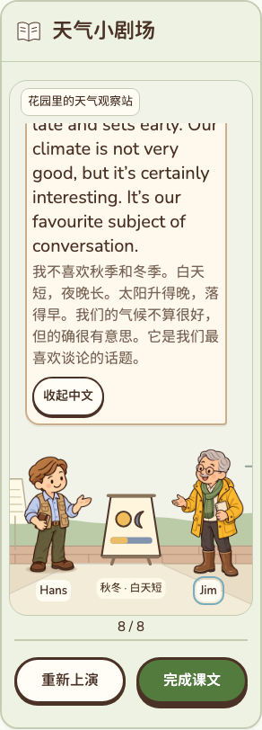
最长原文和中文可以完整向上回看，不截掉句子。以练促学与固定三卡
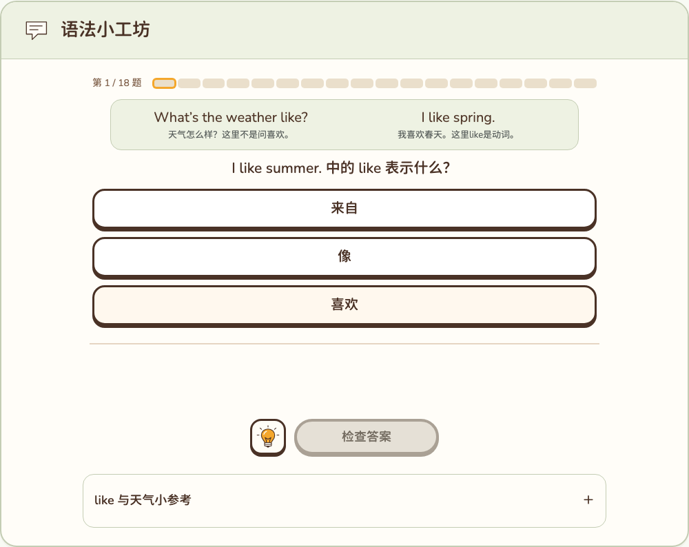
短示范与当前题错开。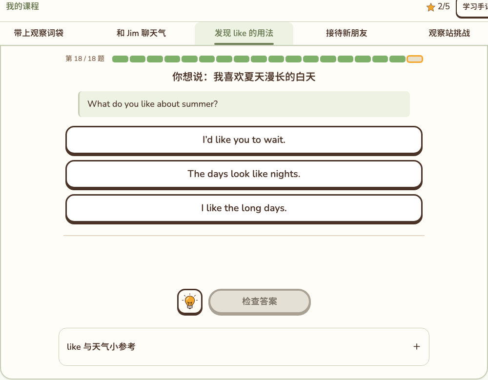
末段撤去示范；综合挑战再换材料运用。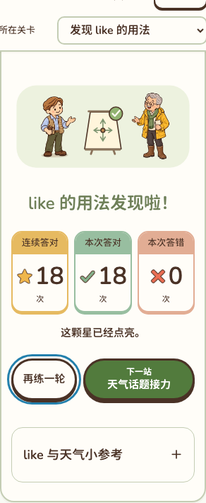
固定连续答对、本次答对、本次答错；再练和下一站集中成组。同姓名、同星数，和认可样板对照
Lesson1–2认可样板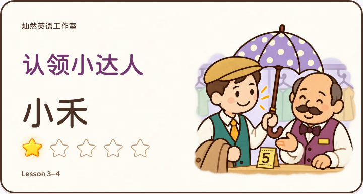
Lesson3–4认可样板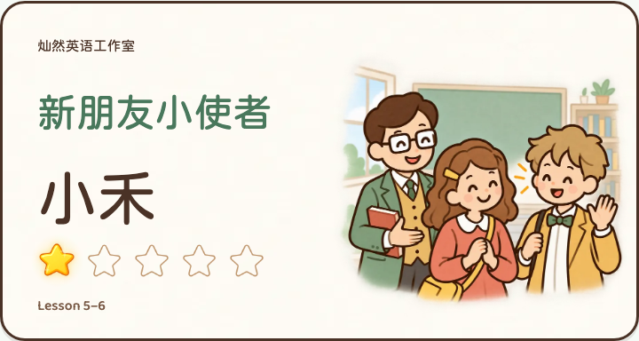
Lesson5–6认可样板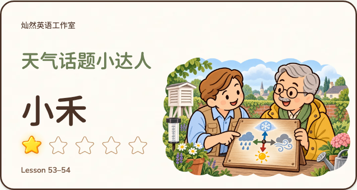
53–54：场景、人物、道具来自本课，字体和卡面层级共用。真实账号、纪念册与导出
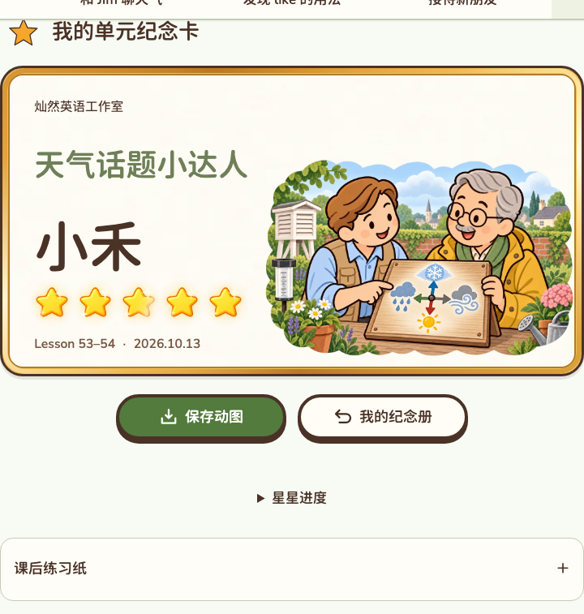
五区实际完成后同步，不是注入星数。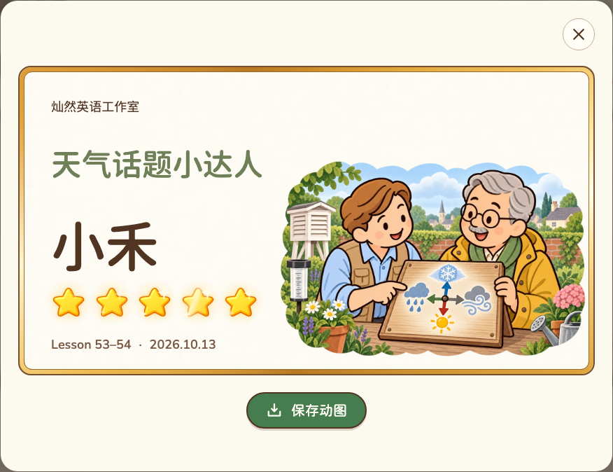
同一姓名和星数进入纪念册。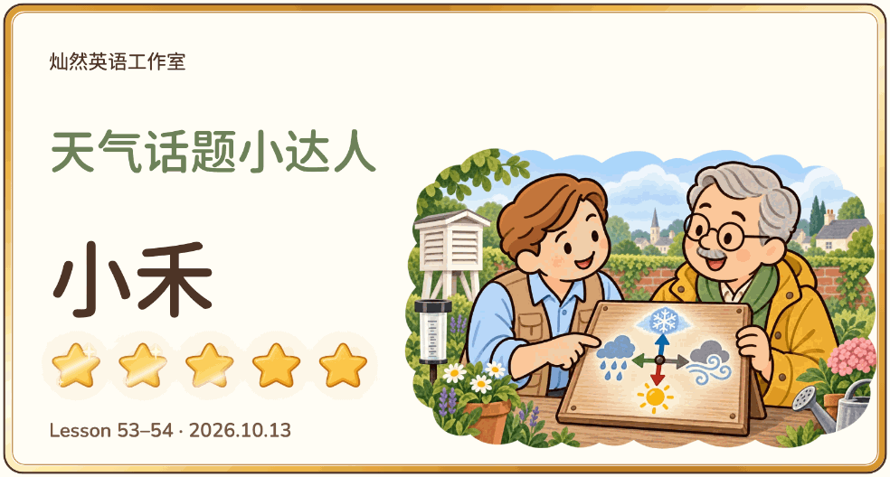
实际导出的循环动图：984×528、60帧；文字与星光独立。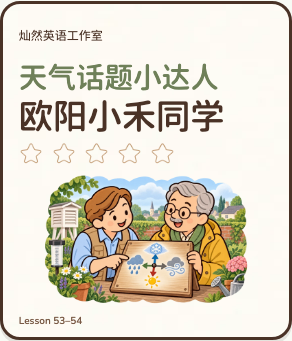
320宽，长姓名不裁切。